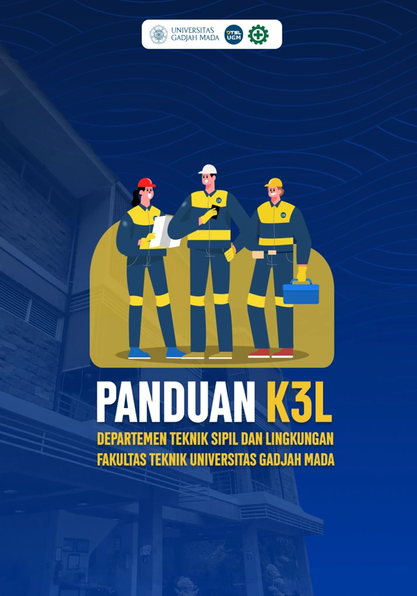
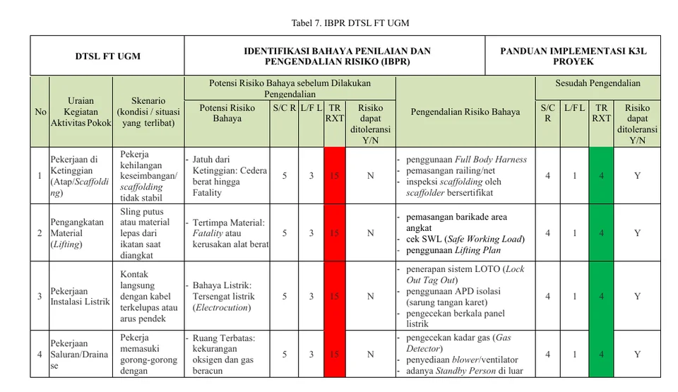
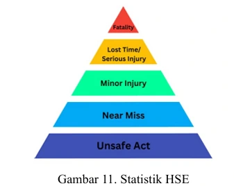
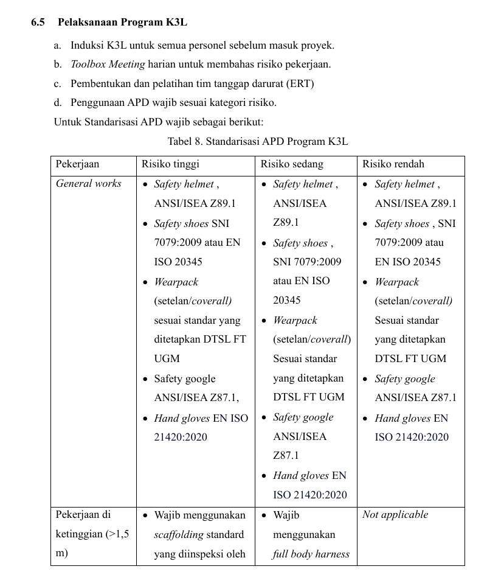

OHSE (K3L) Guidelines —
DTSL FT UGM
Development of a 39-page Occupational Health, Safety & Environment (K3L) guideline for construction projects at the Department of Civil & Environmental Engineering, Faculty of Engineering, Universitas Gadjah Mada.

Overview
This project delivered a 39-page Occupational Health, Safety & Environment (OHSE / K3L) guideline that standardizes safety practice across construction projects run by the Department of Civil & Environmental Engineering (DTSL) at the Faculty of Engineering, Universitas Gadjah Mada.
As part of the development team, I focused on the risk-engineering core of the document — building the risk-classification framework, authoring the Hazard Identification and Risk Assessment (HIRA / IBPR) register, establishing the regulatory and international-standard compliance basis, and defining the personal protective equipment (PPE / APD) standards.
Scope of Work
- Contributed to the development of a 39-page OHSE (K3L) guideline covering any construction project at DTSL FT UGM
- Developed the K4 risk-classification framework — Safety, Health, Security, and Sustainability
- Authored the project's Hazard Identification and Risk Assessment (HIRA / IBPR) register
- Compiled and cross-referenced regulatory and international standards — UU No. 1/1970, PP No. 50/2012 (SMK3), Permen PUPR No. 10/2021 (SMKK), ISO 45001:2018, and ISO 14001:2015 — to establish the guideline's compliance basis
- Developed supporting technical standards, including a PPE (APD) requirement matrix by risk category and a helmet colour-coding system
Key Deliverables
- 39-page OHSE (K3L) guideline document
- K4 risk-classification framework (Safety, Health, Security, Sustainability)
- Hazard Identification and Risk Assessment (HIRA / IBPR) register
- PPE (APD) requirement matrix and helmet colour-coding system


